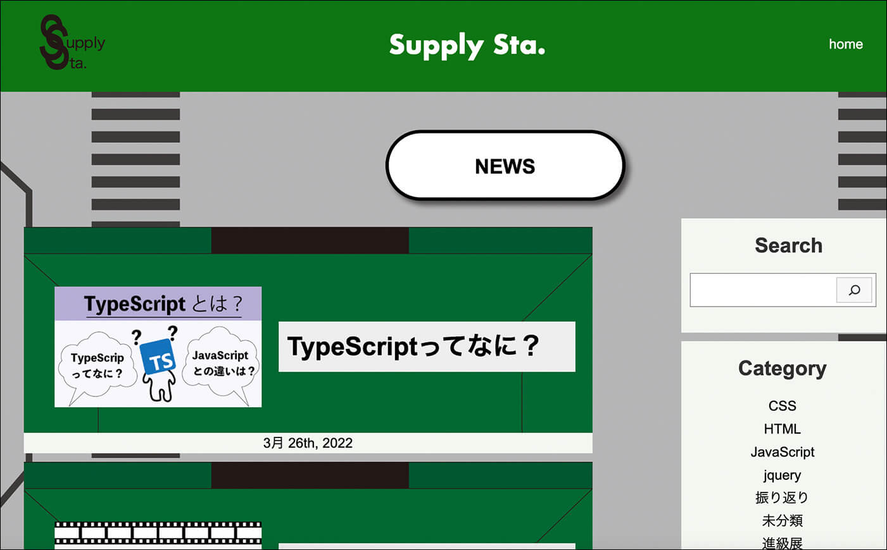
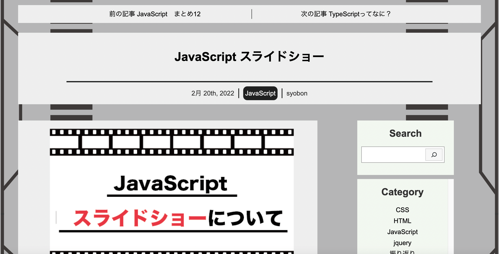
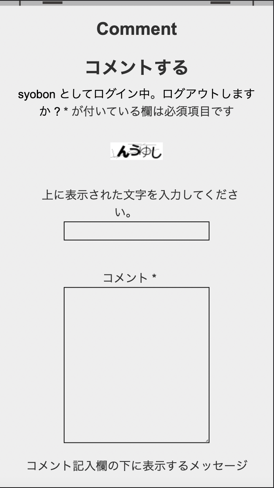
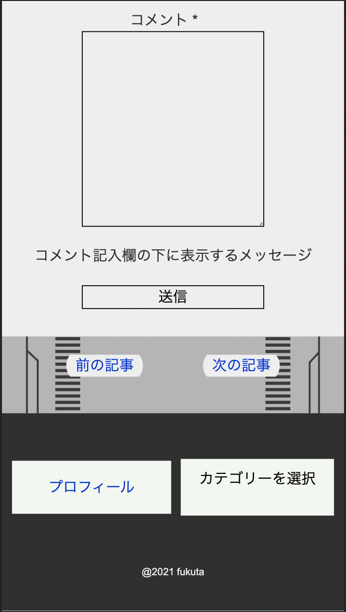
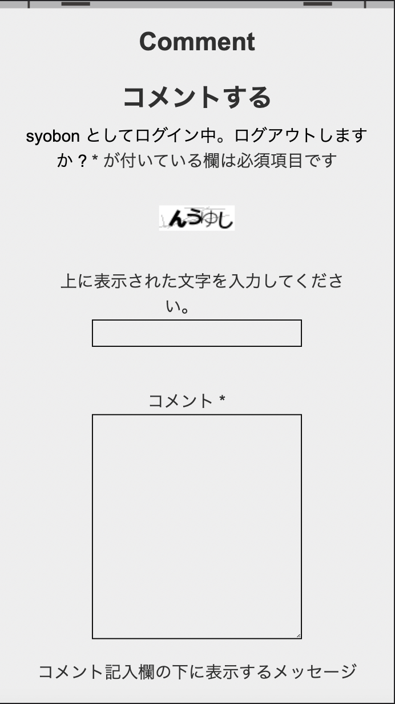
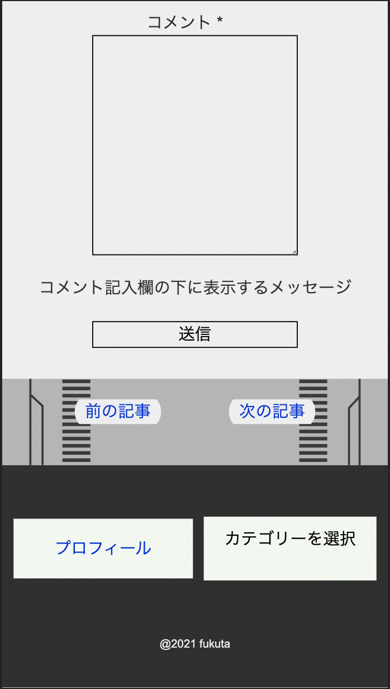

ブログ Supply sta.
作成期間
2ヶ月間
使用技術
HTML+CSS
WordPress
Illustator
XD
作品について
授業の課題で作ったブログです。XDでデザイン後、VSCodeでコーディングしWordpressに組み込みました。レスポンシブデザインで作られています。 まずXDでデザインをし、HTMLとCSSでサイトを構築しました。ローカルでの開発環境を作るためにMAMPを使いました。その後WordPressに組み込むためにPHPを使いheader,index,footerなどに分けて構築しました。サーバーにはロリポップを使っています。ブログはSupply Sta.（補給所）という名前になります。ファビコンにはロゴを設定しています。
1.機能
homeには記事と検索バー、カテゴリーの欄がありますPlofileには名前とメール、ContactはGoogle フォームにつながるリンクを設定して、サイトについての問い合わせページになっています。index.phpにはget_header等を使用しています。記事の表示ではタイトルなどを取得した後、アイキャッチ画像があるなら取得し、ないならデフォルトの画像になります。一定の記事を超えると次のページに移るようになっています。
個別ページでは、上に前の記事と次の記事に移れるバーが表示されています。右にはトップページと同じように検索とカテゴリーのサイドバーが設置されています。左には本文が設置されており、タイトル、投稿日、記事のカテゴリー、設定したサムネが配置されます。サムネの下には本文があり、本文が終わるとシェアボタンとコメントの入力画面があります。初めてコメントを入力する際はログインをする必要があります。
2.プラグイン
Wordpressについているプラグインもいくつか使用しています。
Share Buttons
シェアボタンを設置するプラグインです。
Anti-spam
スパム対策のプラグインです
SiteGuard WP Plugin
セキュリティ向上のためのプラグインです。
SyntaxHighlighter Evolved
コードを見やすくするためのプラグインです。HTMLやJavaScriptなどを選ぶことでそれにあった見やすいデザインになります。このプラグインを使った部分は下のようになります。
3.レスポンシブ
 



このブログはレスポンシブデザインになっています。スマホ用ページになるとサイドバーが邪魔になるので消しています。代わりにfooterにプロフィールへ飛ぶ項目と、サイドバーに設定されていたカテゴリーの項目が追加されます。
感想
前期までの技術をすべて使って作成した作品になります。HTMLやCSSは自分で作りましたが、WordPressの実装は資料を見ながらの実装になりました。難しい部分もありましたが、ブログとして自分の作ったものが動くようになったときはとても嬉しかったです。